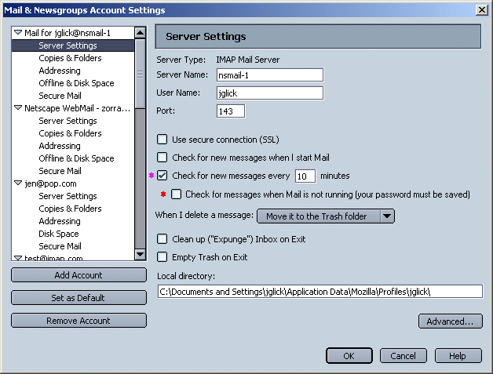
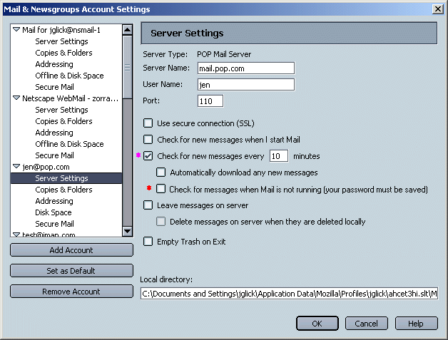
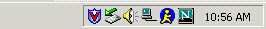
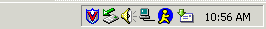
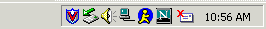
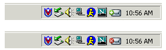
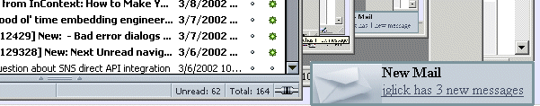
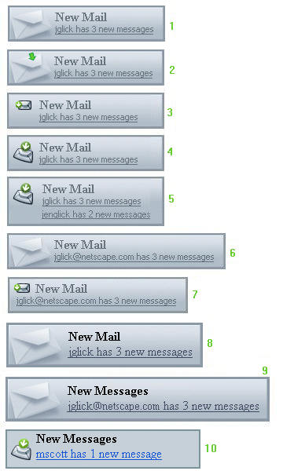
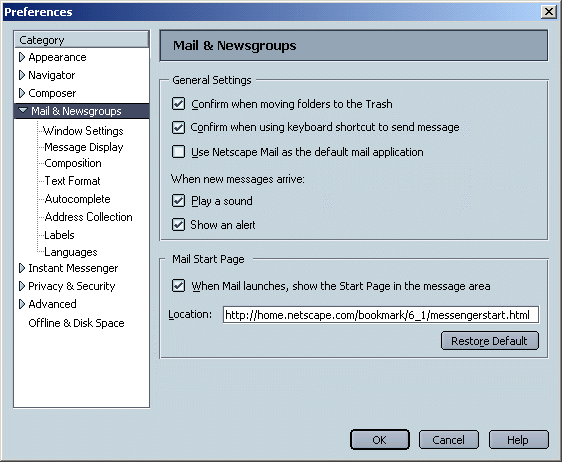

|
MachV/Mozilla: Mail &
Newsgroups
|
UI Specification
|
|
Mail Notification
|
Last
Modification:
|
*Note: "Check for new
mail when Mail is not running" feature is not yet implemented. Mail
must be running (but Quick Launch does not have to be enabled) in
order for mail notification to work.
Bugs
- Bug 18729 - Windows integration for new mail notification
- Bug 97326 - Turbo and new mail notification should use the
same tray icon
- 71105 - If there is new mail, update biff icon on the browser
toolbox without having to start messenger
- Bug 122626 - New Mail Notification
- Bug 123104 - Mail notification tooltip shows wrong count
Open Issues
- Turbo starts up, we don't know which profile user wants to use
yet. Do we show a dialog making user pick a profile? Does it
default to first profile, last used profile? Can we easily flush
out profile info?
- How do we handle multiple accounts in the UI? Tooltips with
info for each account. 128 char max for regular tooltip.
Use default account only? Last account to write into
tooltip?
- What should be the tooltip for the tray icon? What if more
than 1 account has new messages? What if char max for tooltip is
surpassed? "<Username> has X new messages".
- Account Settings dialogs. Is checkbox with red star still
valid?
Open Issues Popup Alerts
- Default display time. Stick with existing time (3 secs) for
now and see how folks respond. Maybe increase it slightly if
necessary. 3/18/02.
- Should the alert use the "user name" or "account name"?
Account name is unique but user name is much shorter (and space is
an issue). Use "User Name" for now. See if it becomes a
problem. Default account name is the email address.
3/18/02.
- What if two or more accounts get new messages at the same
time? Does one alert with multiple lines appear or do separate
alerts appear one after the other? Currently, we check one
account after another, so each the first account checked would
trigger the alert. If one acct receives new mail first, and you
don't click any accounts, bif won't go off again for the next
account. Or should it be once per account?
- Visual design of alert and tray icons. "Get Messages"
toolbar icon or masthead icon for alert. Should tray icons be
"Modern" or more generic? Stick with modern theme across all
themes or per theme alert and tray icon? Marlon to decide. Width
of alert can now be dynamic (yeah!). Resize as necessary to fit
width of user name. 3/18/02.
Summary
Goals
- Provide a method of informing users they have new messages
available when they are currently running the Mail
application.
- Provide a method of informing users they have new messages
available when they are currently Not running the Mail
application, but are running another Mozilla
application.
- Provide a method of informing users they have new messages
available when they are currently Not running the Mail application
Or any other Mozilla application.
- Allow users to enable notification for some accounts and not
for others.
Assumptions
- If No Netscape applications are running, Quick Launch must be
running for Mail Notification to work.
- If Mail is not running but another Netscape application Is
running (any, or only the browser?), Mail Notification will work.
Quick Launch does not need to be running. Single profile
user.
- Separate system tray icons (Windows) for Mail Notification and
Quick Launch.
- Mail Notification when Mail is not running, is Off by default.
If the user enables the feature, the are prompted for their
Account password on startup. Password dialog should tell them why
being prompted. If password saved with Master Password, they are
prompted for MP.
- Don't worry about multiple profiles for now.
- Mail Notification will work for any account except news. IMAP,
POP, AOL, WebMail.
Design Details
1. Account Settings
a. IMAP

Or, "Check for messages when Mail is not running (you will be
asked for your mail password when you start your computer)".
b. POP

2. Potential Cases
Note: Currently, alerts do not work when user is not running Mail,
but is running Quick Launch.
a. Mail is Not Running. No Mozilla/NS App Running
- Quick Launch Must be enabled for Mail Notification to
work.
- Quick Launch is enabled, "Check for New message every X
minutes" is enabled, "Check for messages when mail is not running"
is disabled. No Mail Notification.
- Quick Launch is enabled, "Check for New message every X
minutes" is enabled, "Check for messages when mail is not running"
is enabled. Mail Notification icon will appear in
system tray as appropriate.
b. Mail is Not Running. A Mozilla/NS App Running
- Quick Launch does Not need to be enabled for Mail Notification
to work
- "Check for New message every X minutes" and "Check for
messages when mail is not running" Must be enabled for Quick
Launch to work.
c. Mail is Running
- Quick Launch does Not need to be enabled.
- "Check for messages when mail is not running" does Not need to
be enabled.
- If "Check for new mail every X minutes" is enabled. Mail
Notification icon will appear in system tray as
appropriate.
- "Check for new mail every X minutes" is not enabled. No
Mail Notification.
- User clicks "Get Msgs", No Mail
Notification.
In cases a and b, the user's account password must be saved for
Mail Notification to work. If the user is using Password Manager,
they will be prompted for their master password.
3. Indicator Icon
The Mail Notification system tray icon is separate from the Quick
Launch icon. It only appears in the tray when the feature is
correctly enabled (see section 2 above) and when new messages are
available. Once the user has acknowledged the new mail, the icon is
removed from the system tray.
Double clicking on the Mail Notification tray icon will launch the
Mail application if it is not currently running, or give it focus if
it is already running.
The system tray icon should only be displayed if biff went off and
not when the user manually requested new mail ("Get Msg"
button).
a. Quick Launch Enabled

b. Quick Launch Enabled and Mail Notification Goes Off

c. Quick Launch Not Enabled and Mail Notification Goes Off

d. Quick Launch Enabled. Unable to Connect to Mail Server

e. "Modern" Look Icons

4. New Mail Alert - Dialog
New Mail Notification feature in which a sliding alert dialog,
appearing above the system tray in the lower right corner, is used to
notify users that new messages have been received. It does not
take focus away from the user's current task. The alert slowly slides
open, pauses, and then slowly slides close. Alert only appears when
the New Mail Notification system tray has gone off. See "Potential
Cases" section above.
The alert is global and applies to all accounts for which biff is
currently enabled. It is triggered at the same interval as the biff
setting for each account. Once the alert has been triggered, it
doesn't appear again until the user has acknowledged the existing
mail.
Clicking the link on the alert brings the Mail window into focus
with the appropriate account selected.

Alternate Designs

5. New Mail Alert - Preferences
Alert preference is global. It applies to all accounts for which
biff is enabled. On by default.

6. Tooltips
Hovering over the New Mail Notification icon in the system tray
displays the following tooltip: "<UserName> has X new
message(s)". If more than one account has new messages, the
tooltip has multiple lines, one per account.
Issues
- Is this a global pref setting (and user can select accounts to
be affected), or is it a per account setting? Global setting.
1/9/02.
- Does the Mail Notification "Check for new mail every X
minutes" conflict with the per account "Check for new mail every X
minutes"? Yes. Only show per account item, not in global
nsnotify. 1/9/02.
- Separate icons for Mail Notification and Turbo or combined?
Combined. Icon only visible when new mail is available. Goes
away otherwise. 1/9/02.
- Is Mail Notification enabled by default? No.
1/9/02.
- What if user not connected to ISP? Try to connect
(just like browser does). 1/9/02.
- Mail already running, feedback in system tray as well (as
Launch Mail icon). Yes. 1/9/02.
- Multiple profiles. Future. 1/9/02.
- Notification of new mail when Mail IS running? Yes, info in
system tray. 1/9/02.
- Info about how many mail message are waiting when you startup
the Browser only. Yes. 1/9/02.
- Created a new profile (fred) in 4.x with a invalid Mail
account. Launched NsNotify. Tray icon appears with a big red X
across it. Double clicking on tray icon launches the Profile
Selection dialog with new profile as default in dropdown.
Selecting "Run Mail Now" launches the Profile Selection dialog as
well. Select my original profile (jglick) and launch Mail. Tray
icon still showing icon with red X. Select "Check Now". NsNotify
now appears to be working with jglick profile. Quit Mail. Start
Communicator. Selection Profile dialog. jglick profile selected by
default. Quit Communicator. Run NsNotify. It is working correctly
so it using my jglick profile (last used profile). Launch Mail
from tray icon. Select Profile dialog. Select fred profile
(invalid mail acct). Mail launches with Fred. But NsNotify is
waving flag on icon so it must be still checking my jglick
account. Quit Mail. Launch Communicator. Select Profile dialog.
fred is default profile. Quit app. Run NsNotify. Animated flag is
showing (fred mail account is invalid so it must still be checking
jglick, even though fred is last used profile). Launch mail from
tray icon. Select Profile dialog. fred as default in
dropdown.
- Popup alert prefs. What is global and what is per account?
Prefs will be global, for all accounts. Doesn't take away focus
from what you're doing. Same interval as bif indicator. Comes up
once, doesn't come up again until you've addressed existing mail.
3/18/02.
- Do we want to give users the options to leave the alert up
until they close it? Option to leave dialog open with "X" to
close. No. No Title bar, no Close box. 3/18/02.
- Can user turn off the alert? Yes. No timer pref (allow
user to set alert display time). 3/18/02.
- Can user turn of the system tray icon? No. That's connected
to bif enable/disable prefs already. 3/18/02.
- Should title be "New Mail" or "New Messages"? "New
Message". 3/18/02.
- What should be in the context menu for tray icon? Should it
have a menu? No context menu for now. Not much to put in it
really. 3/19/02.
- Can Quick Launch be off and alerts still be running? Yes,
if Mail app is running. 3/18/02.